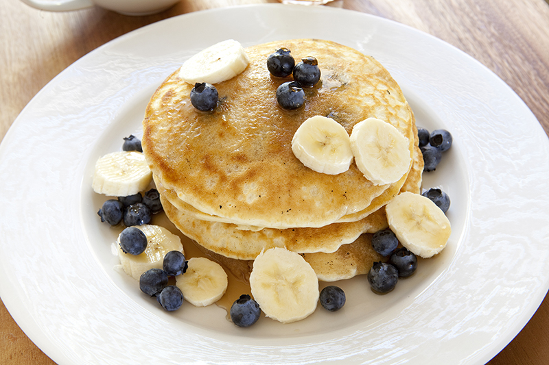

Blueberry Banana Pancakes

A delicous pancake stack made with pureed banana and topped with blueberries
and maple syrup.
Ingredients
- One ripe banana, mashed
- 2/3 cup almond milk
- One teaspoon of vanilla extract
- 3/4 cup of 90g 50/50 mix flour
- One teaspoon baking powder
- 1/2 teaspoon of cinnamon
- 1/8 teaspoon of salt
- 1/4 cup of blueberries, plus more for topping
- a few teaspoons coconut oil, for the pan
- maple syrup, for serving
- 1/4 cup of blueberries + a drizzle of maple syrup + tiny pinch of salt (for blueberry topping)
Steps
- In a small food processor, puree the banana with the almond milk and vanilla.
(or mash it really well by hand - you want it pretty liquified).
- In a separate medium sized bowl, mix together the dry ingredients. Pour the
banana/milk mixture into the dry ingredients and stir until just combined. Gently
stir in the blueberries.
- Heat a few teaspoons of coconut oil in a large skillet over medium heat. Using a
¼ cup measuring cup, scoop the pancake batter into the pan. Flip when bubbles form
in the batter (about 1 minute). Let the second side cook for about 60 seconds and
remove from heat.
- For the blueberry topping, place blueberries in a small bowl with a little bit of
maple syrup. Microwave for 20-30 seconds or until they burst a little.
- Serve pancakes warm with blueberry sauce and maple syrup and enjoy.